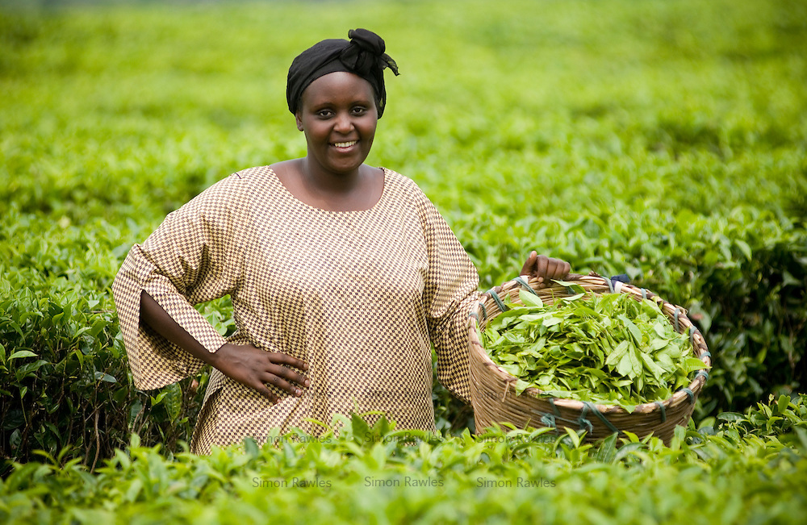

Backpacking
Gepubliceert op 17 Januari door Malina
Ola tar t-banen til jobb T-banen som Ola skal ta til jobb, går klokka syv om morgenen. Ola starter på jobb klokka åtte. Klokka er nå seks, så det er en time til t-banen til Ola går. Han har dusjet, barbert seg og spist frokost. Imens Ola venter på t-banen, ser han på TV. Kvart på syv går Ola hjemmefra til t-banen.
Magnus går tur Magnus går tur i skogen hver dag. Klokka syv går han tur i Østmarka i Oslo. Magnus går rundt Nøklevann. Turen tar 1 time og 15 minutter. Da går Magnus i rolig tempo. Magnus liker skogen. Han liker lukten og alle de forskjellige lydene man hører i skogen.
← Vorig bericht
WildcamperenVolgend bericht →
Verder kijkenLaatste berichten
Dieren in het nieuws